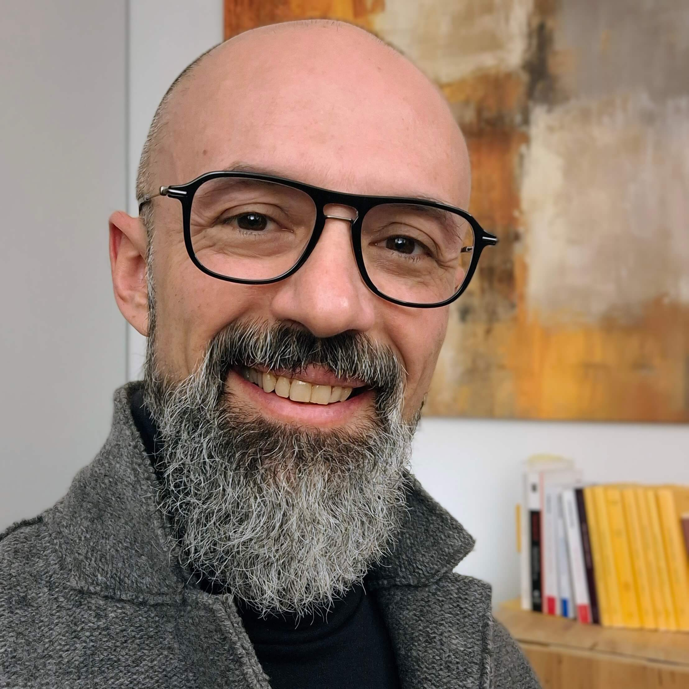
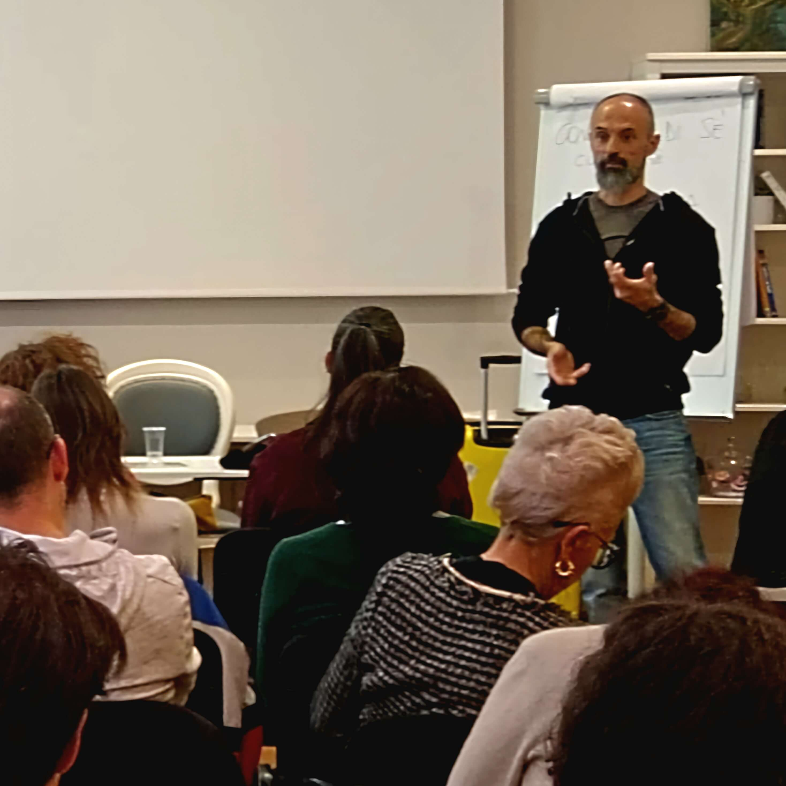
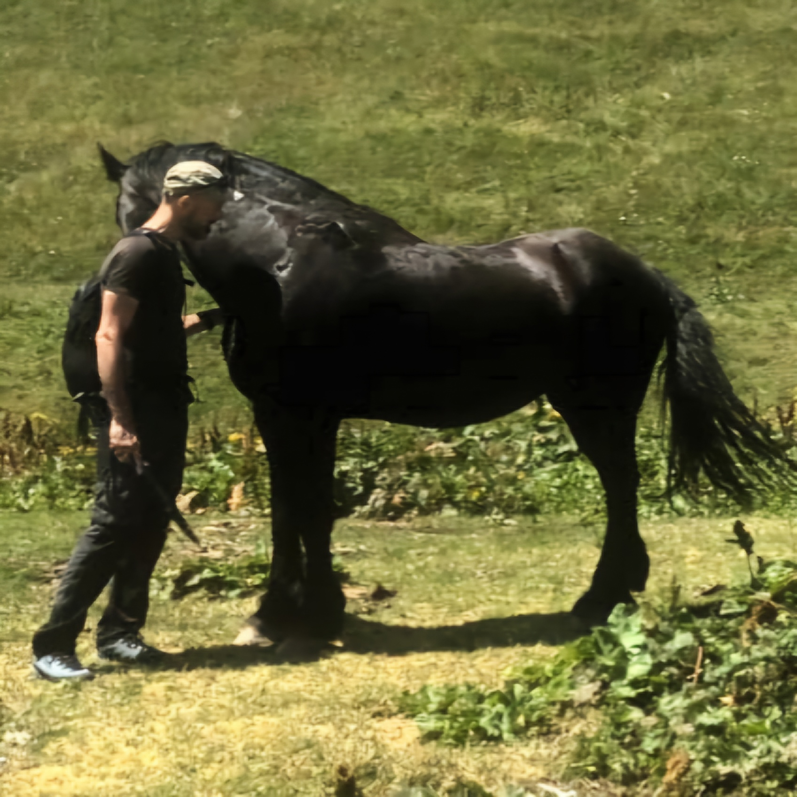

Bios
L'atto motorio è la culla della mente (C.R. Sherrington)
Mi chiamo Mauro, sono figlio di due insegnanti di educazione fisica e sono stato un giovane sportivo io stesso. Da ragazzo pensavo che sarei diventato un atleta professionista. Oppure uno scrittore. O magari uno scienziato, un astronomo.
Mi piaceva saltare, mi piaceva scrivere e mi piacevano le stelle e la natura.
Da oltre vent'anni, invece, mi occupo di consapevolezza corporea, di mindfulness in movimento e di pratiche di regolazione del sistema nervoso per l'equilibrio psicofisico e il benessere delle persone.
Ho una prima Laurea con Lode in Filosofia, una seconda laurea con 110/110 in Psicologia e sono stato borsista di ricerca in Neuroetica delle Dipendenze presso la SISSA di Trieste.
La passione per la mediazione corporea nella relazione d'aiuto mi ha portato a completare diversi percorsi pluriennali di formazione, tra cui Somatic Experiencing®, Approccio Trager® e Counseling Umanistico Integrato, oltre a fare esperienza diretta di metodologie come Metodo Feldenkrais, Prenatal and Birth Therapy, Costellazioni Sistemiche Spirituali, Metodo Hoffman e due diversi protocolli di mindfulness (MBSR e MBLC).

Ognuna di queste esperienze mi ha lasciato qualcosa di importante sul piano professionale ma, ancor più, sul piano personale.
Dal 2013 lavoro nell'ambito della cura delle dipendenze, dal 2016 presso il Centro Soranzo - struttura d'eccellenza che adotta un approccio psicotraumatologico integrato ai disturbi da addiction.
Dal 2021 faccio parte del direttivo SITD Triveneto e svolgo attività di ricerca, divulgazione e formazione sulla cura e la prevenzione delle dipendenze, in collaborazione con università e istituzioni scientifiche.
Come membro del team di Assistenti di Somatic Experiencing® - Italia affianco i professionisti e le professioniste in formazione e sono autorizzato ad offrire loro le sessioni certificate obbligatorie ai fini del conseguimento del diploma di Somatic Experiencing® Practitioner.

Da alcuni anni collaboro con il Master in Counseling Filosofico di PRAGMA Society (Milano), svolgendo attività di docenza sui temi delle attività a mediazione corporea e animale, mentre in passato ho contribuito all’esperienza del Seminario Aperto di Pratiche Filosofiche dell’Università “Ca’ Foscari” di Venezia.
Il mio focus attuale è l'integrazione delle competenze di embodiment e di regolazione del sistema nervoso con quelle filosofiche e del pensiero pratico, al servizio della relazione d'aiuto, delle persone, dei professionisti e delle équipe multidisciplinari con cui collaboro o di cui faccio parte.
A margine di tutto ciò, suono la chitarra e scrivo canzoni da quando avevo dieci anni e ho un'inspiegabile passione per le avanguardie pittoriche del primo '900, in particolare per il movimento espressionista Blaue Reiter.

Amo ancora soffermarmi a guardare le stelle e, quando posso, me ne scappo a camminare in natura, specialmente in montagna.
Ci trovo sempre qualche cosa da imparare, su me stesso e sulla nostra condizione di animali umani.
Ne sa qualcosa chi mi segue sui miei profili social, soprattutto su Instagram.
Se ne hai voglia puoi farlo anche tu. :-)
Dicono di me
Mi ha insegnato, quando più ne avevo bisogno, a ricondurre la mente al corpo per ritrovare calma e centratura. Con il suo aiuto non soltanto ho ritrovato il dono della presenza mentale e la capacità di meravigliarmi per le cose ordinarie, ma ne ho anche tratto nuove ispirazioni per il mio lavoro. Provo ancora gratitudine per il percorso fatto assieme.
Enrico Gallorini
CEO @ GRS Research & Strategy, Dubai
Autore di "In-Person: A Journey Through the Unstoppable Evolution of Events" (2024)
Scopri il suo libro
Ricordo un momento meraviglioso durante una seduta con Mauro Semenzato, quando con difficoltà gli ho detto: «In questo momento mi sento giudicata da te». Altre volte avevo detto una cosa simile a diverse mie terapeute ma la loro reazione mi era stata devastante. Avevano negato il giudizio e rimandato la responsabilità a me, facendomi sentire doppiamente sbagliata, doppiamente giudicata. Lui invece ha replicato con sincerità: «Ma che cosa terribile!». Quell'affermazione, che distoglieva dalla questione di chi ha torto e chi ha ragione, accoglieva semplicemente il mio sentire e la sua validazione ha disconfermato in modo importante un apprendimento implicito di colpevolezza per le mancanze altrui. Che cosa accade quando l'altro riconosce la ferita e se ne assume la responsabilità? Grazie Mauro per avermi accompagnata sempre con il massimo rispetto, sensibilità e attenzione.
Rivkah Hetherington
Psicologa, Arteterapeuta, Somatic Experiencing Practitioner
Co-curatrice di "Arteterapia e trauma. Metodologie per il riconsolidamento della memoria" (Carocci, 2025)
Scopri il suo libro
Methodos
Embodied Philosophical Counseling
Una via che nasce dall'intreccio di tanti sentieri.
Quando sentiamo la parola "metodo" tendiamo a pensare a una sorta di manuale di istruzioni.
Eppure l'etimologia di "methodos" rimanda all'idea del cammino, del passaggio che conduce oltre e altrove, un po' come un valico tra due montagne.
E come sanno bene gli assidui camminatori, allo stesso valico si può giungere seguendo percorsi differenti, che convergono verso la medesima direzione.
Così è stato per il mio percorso di evoluzione personale e professionale, che si è nutrito di molteplici radici, ognuna delle quali svolge un ruolo nel mio modo di lavorare con le persone.
Chiamo dunque "Embodied Philosophical Counseling" l'insieme di competenze che caratterizza la mia offerta di servizi.
In questa pagina potrai approfondire ognuna delle metodologie specifiche in cui mi sono diplomato e delle cui caratteristiche potrai usufruire.
Ad esse va aggiunta l'attitudine filosofica, come sfondo di senso e imprescindibile collante.
Filosofia. In cosa fa la differenza?
Adottare un approccio filosofico alla relazione d'aiuto significa per me molte cose, ma ce ne sono alcune che voglio portare alla tua attenzione:
- Lavoreremo fianco a fianco, come due ricercatori del vero, del bello e del buono, in vista del tuo bene e della tua fioritura esistenziale.
- Ti aiuterò a sottoporre la tua vita ad esame sulla base dei tuoi stessi valori, della tua stessa ragione e della tua sensibilità.
- Non ti sottoporrò a diagnosi e non ti dirò dall'alto che cosa devi fare, ma potrò invitarti a fare pratica di regolazione e determinazione di te.
- Ti aiuterò a fare chiarezza nella confusione, distinguendo ogni dettaglio dall'altro con rigore e precisione (diairesis) ma senza mai perdere le connessioni e la visione d'insieme (synagoge).
- Sarò aperto a incontrare la tua visione del mondo, qualunque essa sia, desideroso di comprenderla a fondo come una delle possibili risposte al mistero di esistere.
- Sarò pronto ad affrontare dilemmi etici e temi spirituali, senza preclusioni o pregiudizi.
- Non indietreggerò di fronte al tema della morte e del rapporto con l'assoluto, se questo sarà importante per te.
- Sarò la tua guida nei luoghi non visti e non pensati del tuo mondo e, come tale, sarò disposto ad imparare ad ogni istante da te. Al tempo stesso, ti solleciterò con il mio sguardo sulle cose, il mio pensiero e il mio sentire.
Sessioni individuali →
Somatic Experiencing®
"Il trauma non è nell'evento, ma in ciò che tratteniamo dentro in assenza di un testimone empatico" (Peter Levine)
Sviluppato a partire dagli anni settanta del secolo scorso da Peter Levine, ricercatore multidisciplinare che si è occupato di fisiologia dello stress, biologia, etologia, neuroscienze e psicologia, Somatic Experiencing® è un approccio naturalistico e psicofisiologico alla rinegoziazione delle esperienze traumatiche, basato su un'articolata comprensione neurofisiologica ed etologica della risposta allo stress.
Dal punto di vista metodologico, si impernia sull’accompagnamento del cliente nell’esplorazione della propria esperienza corporea (cinestesica, propriocettiva ed enterocettiva) a partire da una relazione sintonizzata con l’operatore e dalla creazione di condizioni percepite come sicure.
Obiettivo dell'intervento è il ripristino delle capacità di regolazione dell’organismo, attraverso il completamento delle risposte alla minaccia rimaste inconcluse in occasione dell'evento traumatico o a causa dell'atmosfera traumatica del passato: il trauma non risiede nell'evento, ma nella fisiologia alterata dai processi non completati.
Il focus dell'operatore, pertanto, non sarà sui contenuti della narrazione del cliente ma sulle risposte fisiologiche del suo sistema nervoso autonomo, che si manifestano attraverso il corpo e che si possono notare con l'osservazione o percepire per risonanza.
Oltre il linguaggio: parlare all'Animale che siamo
"Zoon logon echon": secondo la definizione aristotelica, l'umano è un animale (Zoon) dotato di linguaggio e di pensiero razionale. Su questa specificità si concentra la maggior parte delle "terapie della parola", che abbandonano il corpo alla sfera di competenza esclusiva dell'intervento biomedico e del suo approccio meccanicistico.
Somatic Experiencing®, invece, si prende cura dello Zoon, di quella base animale che, se trascurata, può prendere il sopravvento sulle nostre funzioni cognitive di regolazione delle emozioni ed elaborazione del pensiero.
Per questo, durante le sessioni, la narrazione viene spesso spezzettata o rallentata: prioritario è dare tempo al sistema nervoso di processare le attivazioni fisiologiche legate alle memorie implicite che si riattivano nel presente, prima che queste sfuggano o diventino troppo intense e potenzialmente soverchianti.
Per agevolare il processo, l'operatore aiuta il cliente a procedere lentamente, facendo un passo alla volta e alternando tra il contatto con elementi di sostegno e piccoli pezzi di materiale traumatico.
In questo modo, si permette alla persona di fare esperienza incarnata di processi di autoregolazione efficaci e sostenuti dalle risorse attuali, in relazione a porzioni gestibili di memorie traumatiche del passato, che vengono così un po' alla volta rinegoziate a livello della fisiologia e non soltanto rielaborate cognitivamente in superficie.
La rinegoziazione, più che assumere la forma di gesti volontari eclatanti, si manifesterà piuttosto sotto forma di processi autonomici involontari, assestamenti tonico-posturali, impulsi al movimento e movimenti preparatori legati a varie fasi di risposta alla minaccia, da seguire e accompagnare con calma e presenza, sentendone l'effetto nel corpo.
Somatic Experiencing® è un approccio basato sul contenimento: non promuove la catarsi, aiuta la persona a passare dalla frammentazione all’integrazione, recuperando la continuità del sé.
Sessioni individuali →
Approccio Trager®
"Siamo immersi in un oceano di piacevolezza" (Milton Trager)
Sviluppato dal medico e danzatore acrobatico americano Milton Trager (1908-1997), l'Approccio Trager® è descritto come una disciplina di educazione al movimento che, attraverso il linguaggio del tocco e l'esplorazione consapevole del movimento, punta all'armonica integrazione di corpo e mente nell'interazione con l'ambiente e nelle gestualità della vita quotidiana.
Caratteristico di questo metodo è l'ascolto meditativo del corpo in movimento, specialmente in relazione alla forza di gravità e alla polarità “tensione-distensione”, orientato da domande aperte che invitano a esplorare qualità positive come fluidità, leggerezza, stabilità, elasticità e piacevolezza, nonché a giocare con diversi ritmi, ampiezze e intensità.
Esso comprende una componente di esplorazione del movimento attivo, che si può svolgere facilmente anche in gruppo (una sorta di mindfulness in movimento orientata da immagini e domande aperte) e una componente di esplorazione del movimento passivo (lasciarsi muovere dall'operatore) che si svolge in sessioni individuali con l'ausilio di un lettino da massaggio, di una sedia, oppure di un materassino.
Oltre la postura: la Via della piacevolezza
Cuore del metodo, in entrambe le componenti, è senza dubbio la qualità della presenza e della consapevolezza che vengono sperimentate e coltivate, in primo luogo dall'operatore.
Una profonda e concreta connessione con se stessi che, a partire dal corpo, si espande a comprendere l'ambiente circostante e perfino un senso di totalità: ciò che Romain Rolland chiamava "sentimento oceanico" e che, con Epicuro, potremmo ricondurre all'esperienza del "nudo piacere di vivere".
Una Via della piacevolezza, dunque, che attraverso il movimento conduce alla quiete della consapevolezza sentita della Vita che accade e ci sostiene.
L'Approccio Trager® è una tipologia di lavoro fortemente orientata alle risorse, che facilita l'accesso all'esperienza corporea e alla spontaneità, grazie all'accento sul piacere e sulla distensione, l'attitudine giocosa e non giudicante, la grande libertà di esplorazione e l'assenza di forme esecutive ortodosse a cui doversi adeguare in modo performativo.
Nell'ottica di Milton Trager, gli eventi traumatici non si possono cancellare, ma gli schemi di tensione che ne derivano si possono modificare: il modo per farlo è accumulare sufficienti esperienze corporee di segno positivo, che facciano sperimentare al sistema nervoso quanto è possibile lasciar andare e stare bene ora.
Sessioni individuali →
Counseling Umanistico Integrato
"Quel che sono è sufficiente, se solo riesco ad esserlo" (Carl Rogers)
Il counseling è una relazione d’aiuto centrata sull’ascolto profondo e non giudicante della persona, dei suoi vissuti, delle sue difficoltà ma anche dei suoi desideri, dei suoi bisogni e delle sue qualità personali.
Il primo e fondamentale servizio che il counselor offre al proprio cliente è quello di un’accoglienza empatica, di uno spazio protetto in cui potersi esprimere liberamente, sentendosi realmente compreso, riconosciuto, rispettato e valorizzato.
Il counseling muove dalla convinzione che in ognuno di noi vi siano le risorse necessarie a superare le situazioni più difficili e dolorose, per indirizzare la propria vita e le proprie scelte verso una condizione di maggiore felicità.
A partire da questo presupposto, il counselor aiuta la persona a comprendere più a fondo e più chiaramente se stessa, le proprie convinzioni, le proprie emozioni, i propri desideri e obiettivi, in modo tale da trovare le proprie soluzioni creative e le proprie risposte, per affrontare particolari situazioni o specifici problemi di carattere non psicopatologico.
NOTA
- Il Counseling non è psicoterapia
- Il Counseling non è un intervento di diagnosi e cura
- Il percorso ha durata definita, con obiettivi concordati all'inizio e verificati periodicamente insieme
- Le prestazioni di counseling sono svolte ai sensi della Legge 14 gennaio 2013, n. 4
Sessioni individuali →
Training Autogeno
"Essere in grado di distendersi significa non essere più in balia di se stessi" (J.H. Schulz)
Sviluppato dallo psichiatra tedesco Johannes Heinrich Schulz a partire dagli anni '30, il Training Autogeno è una tecnica di auto-distensione che permette di produrre autonomamente modificazioni fisiologiche reali (regolazione del tono muscolare, della funzione vascolare e dell'attività viscerale) attraverso una specifica forma di concentrazione passiva.
Il termine "autogeno" sottolinea la natura del metodo: non è un intervento subito dall'esterno, ma un processo che si genera (genos) da sé (autos). Attraverso l'apprendimento di una serie di esercizi di concentrazione mentale mirati a specifiche zone del corpo, la persona impara a indurre uno stato di commutazione autogena: un cambiamento profondo dello stato di coscienza che favorisce il recupero delle energie e il riequilibrio del sistema nervoso autonomo.
Oltre il rilassamento: un esercizio di libertà
Nel contesto Filosomatico, il Training Autogeno non è solo uno strumento per ridurre lo stress. È una pratica di "presenza" in cui la mente smette di voler controllare il corpo in modo muscolare e impara a lasciar accadere i processi fisiologici.
Gli esercizi (Calore, Pesantezza, Cuore, Respiro, Plesso Solare e Fronte Fresca) diventano stazioni di un percorso di auto-osservazione che porta a una maggiore padronanza di sé e a una più profonda calma interiore. Questa metodologia si integra nel mio approccio come uno strumento fondamentale di auto-regolazione, fornendo al cliente una risorsa concreta e autonoma da portare nella propria quotidianità per gestire stati di ansia, insonnia o tensioni somatizzate.
Sessioni individuali →
Privacy
Informativa sul trattamento dei dati personali
Ai sensi dell'art. 13 del Regolamento (UE) 2016/679 (GDPR), questa informativa descrive come vengono trattati i dati inviati tramite il modulo di contatto di questo sito.
Titolare del trattamento
Dr. Mauro Semenzato – P.IVA 03960860272
Email: mauro.semenzato@gmail.com
Dati trattati
Nome, indirizzo email e contenuto del messaggio che scegli di inviare. Ti invito a non inserire nel messaggio informazioni sulla salute o altri dati personali non necessari alla tua richiesta.
Finalità e base giuridica
I dati sono trattati esclusivamente per rispondere alla tua richiesta di informazioni o di appuntamento. La base giuridica è l'esecuzione di misure precontrattuali adottate su tua richiesta (art. 6, par. 1, lett. b, GDPR).
Destinatari e trasferimento fuori dall'UE
Il modulo è gestito dal servizio Formspree (Formspree, Inc., Stati Uniti), che riceve i messaggi e li inoltra al titolare. I dati possono quindi essere trasferiti negli Stati Uniti, sulla base delle garanzie previste dagli artt. 44 e seguenti del GDPR adottate dal fornitore. I dati non sono diffusi né ceduti a terzi per altre finalità.
Conservazione
I dati sono conservati per il tempo necessario a gestire la richiesta e comunque non oltre 12 mesi. Se la richiesta porta all'avvio di un percorso, i dati sono trattati secondo l'informativa consegnata in quella sede.
I tuoi diritti
Puoi chiedere in ogni momento l'accesso ai tuoi dati, la loro rettifica o cancellazione, la limitazione del trattamento, l'opposizione e la portabilità (artt. 15-22 GDPR), scrivendo all'indirizzo email sopra indicato. Hai inoltre il diritto di proporre reclamo al Garante per la protezione dei dati personali (www.garanteprivacy.it).